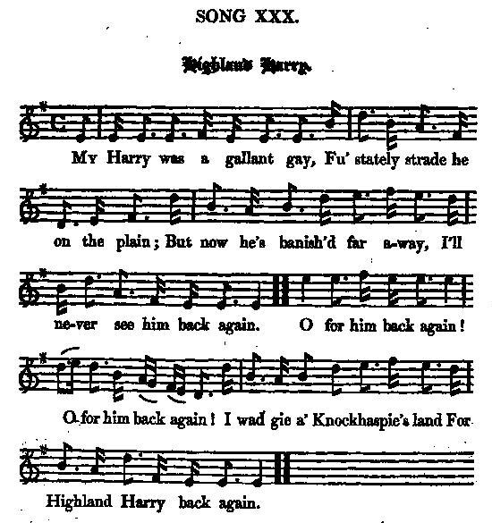

My Harry was a Gallant gay
Highland Harry
Lyrics (modified) by Robert Burns and completed by Sutherland
Tune"Highland Watch's Farewell to Ireland"
(Stewart's Reels 1762)
from
Johnson's and Burns's "Scots Musical Museum", Volume III (1790), N° 209
and Hogg's "Jacobite Relics", Second Series, 1821 N°30 page 60
Sequenced by Christian Souchon

|
To the tune:
The MS. copy in the British Museum is not in Burns's handwriting, and it contains two stanzas not in the Scots Musical Museum. The additional stanzas refer to "The auld Stewarts back again" , a different tune to that in the text. In Law's MS. List, ' Mr. B—'s old words.' This and Strathallan are reminiscences of Burns's Highland tour: ' The oldest title I ever heard to this air was "The Highland Watch's farewell to Ireland". The chorus I picked up from an old woman in Dumblane; the rest of the song is mine" (Interleaved Museum). The 42nd regiment, or Black Watch , was quartered in different parts of Ireland for seven years between 1749 and 1756, and the latter year may be taken as the date of the tune which is entitled "Highland Watch's farewell to Ireland" in Stewart's Reels, 1762, 27, and as "Highlander's farewell" in Ross's Reels, 1780,10. Source: Complete Songs of Robert Burns Online Book" (cf. Links). |
A propos de la mélodie:
Le manuscrit du British Museum n'est pas de la main de Burns et il contient deux couplets absents du "Musée musical". Ces derniers ont trait au chant "The auld Stewarts back again" dont la mélodie est différente. La "liste de Law" porte la mention: "Paroles de M. B--s". Ce chant, ainsi que Strathallan sont des réminiscences de la tournée de Burns dans les Highlands: 'Le premier titre que j'aie entendu donner à cet air est "L'adieu à l'Irlande de la Garde des Highlands". Le refrain m'a été soufflé par une vieille femme de Dunblane; le reste du chant est de moi. ("Musée interfolié"). Le 42ème Régiment, ou Garde Noire , fut caserné dans différentes garnisons d'Irlande entre 1749 et 1756. Cette seconde date est donc sans doute celle de la composition de l'air intitulé "L'adieu à l'Irlande de la Garde des Highlands" dans le recueil de reels de Stewart (1762), N°27 et "L'Adieu des Highlanders" dans les "Reels" de Ross (1780), N°10. Source: Complete Songs of Robert Burns Online Book" (cf. Liens). |

|
1. My Harry was a gallant gay
Fu' stately strade he on the plain But now he's banish'd far away I'll never see him back again. (twice) CHORUS: O for him back again O for him back again I wad gie a' Knockhaspie's land For Highland Harry back again. (twice) 2. When a' the lave gae to their bed I wander dowie up the glen I set me down and greet my fill For Highland Harry back again. CHORUS 3. O were some villains hangit high And ilka body had their ain! When I might see the joyfu' sight Of Highland Harry back again. CHORUS Additional verses: in Hogg's Jacobite Relics, IInd series N°30, p.60: 4. Sad was the day, and sad the hour, He left me in his native plain, And rush'd his injur'd prince to join ; But, oh! he ne'er came back again! CHORUS 5. Strong was my Harry's arm in might, Unmatch'd on a' the Highland plain; But vengeance has put down the right, And, oh ! he'll ne'er come back again ! O for him back again! 0 for him back again! I wad gie a' Knockhaspie's land For Highland Harry back again. |
1. Harry était vaillant et gai,
Mais voilà qu'il est exilé. Il s'est éloigné par la plaine. Me laissant seule avec ma peine. (bis) Refrain: Pourvu qu'il me revienne! Il n'est point de richesse qui tienne: Je donnerais tout Knockhaspie Pour que revienne mon Harry! (bis) 2. Et lorsque tout le monde dort Toutes les larmes de mon corps Je les verse et je cours le glen En espérant qu'Harry revienne. Refrain 3. Mais si l'on pend certains gredins Et que mon Harry me revient, Qu'on restaure les lois anciennes, Nulle joie ne vaudra la mienne. Refrain Strophes supplémentaires ("Reliques Jacobites de Hogg, 2ème série, 1821, N°30 p.60): 4. Triste journée, triste moment Où je vis partir mon amant Pour rejoindre un prince humilié. Puissé-je le revoir jamais! Refrain 5. Harry était fort au combat. Et nul ne fit plier son bras. Mais la rancoeur prime le droit. Je sais qu'il ne reviendra pas! Pourvu qu'il me revienne! Il n'est point de richesse qui tienne: Je donnerais tout Knockhaspie Pour que revienne mon Harry! (Trad. Ch.Souchon (c) 2004) |
|
"[Folksong editor]
Peter Buchan
(1790 - 1854) states that: 'the original song related to a love attachment between Harry Lunsdale, the second son of a Highland gentleman, and Mrs Jeanie Gordon, daughter to the Laird of Knockespock, in Aberdeenshire. The lady was married to her cousin, Habichie Gordon, a son of the Laird of Rhynie; and some time after her former lover having met her and shaken her hand, her husband drew his sword in anger, and lopped off several of Lumsdale's fingers, which Highland Harry took so much to heart that he soon after died'.
Burns gave the song a Jacobite slant in accordance with his personal views." Source "The Burns Encyclopedia" (http://www.robertburns.org/encyclopedia/). According to Hogg (in his "Jacobite Relics -Vol. II, published in 1821) whose version of the song includes two additional verses : This song "is likewise a popular song and air, both of which have been published. This edition is taken from Mr Moir's collection. The first 3 verses were altered by Burns from an old song. the other 2 were added by Sutherland." (whoever Sutherland is). These 2 verses are evidently different from the ones mentioned in the "note to the tune" above. |
"[Le folkloriste]
Peter Buchan
(1790 - 1854) nous apprend qu': 'à l'origine , ce chant parle d'une histoire d'amour entre le fils cadet d'un gentilhomme des Highlands, Harry Lunsdale et Melle Jeanne Gordeon, fille du Laird de
Knockespock, en Aberdeenshire. La demoiselle dut épouser son cousin,
Habichie Gordon, fils du Laird de Rhynie; quelque temps après, elle rencontra son ancien soupirant et lui serra la main. Son époux, dans un accès de colère, tira son épée et trancha plusieurs doigts à ce dernier. Harry des Highlands en fut si désespéré qu'il mourut peu après.'
Burns donna au chant une tournure Jacobite, suivant une pente qui lui était naturelle. Source "The Burns Encyclopedia" (http://www.robertburns.org/encyclopedia/) Selon James Hogg ("Reliques Jacobites - Vol.II, 1821) dont la version comporte deux strophes supplémentaires : Ce chant "est traditionnel, tout comme la mélodie. L'un est l'autre ont déjà été publiés. Cette version provient de la collection de M.Moir. Les 3 premières strophes ont été modifiées par Burns à partir d'une vieille chanson et les 2 autres sont de Sutherland." (Qui est Sutherland?) Ces 2 strophes sont bien sûr différentes de celles visées par la note "à propos de la mélodie" ci-dessus. |